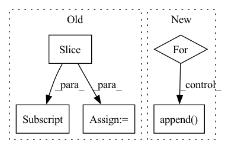

Pattern ID :4376

Before Change
split_idx_train = n_train + n_lags + n_forecasts - 1
split_idx_val = split_idx_train - n_lags if inputs_overbleed else split_idx_train
df_train = df.copy(deep=True).iloc[:split_idx_train].reset_index(drop=True)
df_val = df.copy(deep=True).iloc[split_idx_val:].reset_index(drop=True)
log.debug("{} n_train, {} n_eval".format(n_train, n_samples - n_train))
return df_train, df_val
After Change
df_train_list = list()
df_val_list = list()
if local_modeling:
for df in df_list:
df_train, df_val = single_split_df(df, n_lags, n_forecasts, valid_p, inputs_overbleed)
df_train_list.append(df_train)
df_val_list.append(df_val)
df_train, df_val = df_train_list, df_val_list
else:
threshold_time_stamp = find_time_threshold(df_list, n_lags, valid_p, inputs_overbleed)
df_train, df_val = split_considering_timestamp(df_list, threshold_time_stamp)
In pattern: SUPERPATTERN
Frequency: 3
Non-data size: 5
Instances
Fragment ID: 16143285
Project Name: ourownstory/neural_prophet
Commit Name: d07b79568ef37904de81ba00248764233fbaa8c8
Time: 2021-10-07
Author: ourownstory@users.noreply.github.com
File Name: neuralprophet/df_utils.py
M Class Name: AnonimousClass
N Class Name: AnonimousClass
M Method Name: split_df(6)
N Method Name: split_df(5)
M Parent Class:
N Parent Class:
M File Name: neuralprophet/df_utils.py
N File Name: neuralprophet/df_utils.py
M Start Line: 297
M End Line: 312
N Start Line: 506
N End Line: 539
'>
Before Change
split_idx_train = n_train + n_lags + n_forecasts - 1
split_idx_val = split_idx_train - n_lags if inputs_overbleed else split_idx_train
df_train = df.copy(deep=True).iloc[:split_idx_train].reset_index(drop=True)
df_val = df.copy(deep=True).iloc[split_idx_val:].reset_index(drop=True)
log.debug("{} n_train, {} n_eval".format(n_train, n_samples - n_train))
return df_train, df_val
After Change
df_train_list = list()
df_val_list = list()
if local_modeling:
for df in df_list:
df_train, df_val = single_split_df(df, n_lags, n_forecasts, valid_p, inputs_overbleed)
df_train_list.append(df_train)
df_val_list.append(df_val)
df_train, df_val = df_train_list, df_val_list
else:
threshold_time_stamp = find_time_threshold(df_list, n_lags, valid_p, inputs_overbleed)
'>
Fragment ID: 16143267
Project Name: ourownstory/neural_prophet
Commit Name: d07b79568ef37904de81ba00248764233fbaa8c8
Time: 2021-10-07
Author: ourownstory@users.noreply.github.com
File Name: neuralprophet/df_utils.py
M Class Name: AnonimousClass
N Class Name: AnonimousClass
M Method Name: split_df(6)
N Method Name: split_df(5)
M Parent Class:
N Parent Class:
M File Name: neuralprophet/df_utils.py
N File Name: neuralprophet/df_utils.py
M Start Line: 297
M End Line: 312
N Start Line: 506
N End Line: 539
'>
Before Change
matches = self.matcher(doc)
if len(matches) == 1:
_, start, end = matches[0]
span = doc[start:end]
toks = list(span)
anchor = toks[-1]
noun_chunks = list(span.noun_chunks)
if len(noun_chunks) > 1:
After Change
rule_name="spacy noun chunk tags",
)
)
for chunk in noun_chunks[:-1]:
if anchor in chunk.conjuncts:
ents.append(
_copy_ent_with_new_spans(
spans=[
(
entity.start + chunk.start_char,
entity.start
+ (chunk.end_char - chunk.start_char)
+ chunk.start_char,
),
(
entity.start + anchor.idx,
entity.start + len(anchor) + anchor.idx,
),
],
text=text,
entity=entity,
join_str=" ",
rule_name="spacy noun chunk tags",
)
)
return ents
'>
Fragment ID: 16143278
Project Name: astrazeneca/kazu
Commit Name: 6a4876f27e311cce0439141b3ab4744b5a86ba40
Time: 2022-11-30
Author: richard.jackson4@astrazeneca.com
File Name: kazu/steps/ner/entity_post_processing.py
M Class Name: SplitOnConjunctionPattern
N Class Name: SplitOnConjunctionPattern
M Method Name: run_conjunction_rules(4)
N Method Name: run_conjunction_rules(4)
M Parent Class:
N Parent Class:
M File Name: kazu/steps/ner/entity_post_processing.py
N File Name: kazu/steps/ner/entity_post_processing.py
M Start Line: 71
M End Line: 84
N Start Line: 44
N End Line: 89
'>
Before Change
start, end = source_data["start"], source_data["end"]
wav_path = os.path.join(self.wav_root, source_data["path"])
wave, sr = sf.read(wav_path)
wave = np.array(wave)[start: end]
wave = wave[None]
mixture = mixture + wave
if sources is None:
sources = wave
else:
sources = np.concatenate([sources, wave], axis=0)
segment_IDs.append("{}_{}-{}".format(source_data["utterance-ID"], start, end))
mixture = torch.Tensor(mixture).float()
sources = torch.Tensor(sources).float()
return mixture, sources, segment_IDs
After Change
sources = []
for _source in __sources__:
source, sr = sf.read(sources_data[_source]["path"])
source = source[start_idx: end_idx].mean(axis=1)
print(source.shape)
sources.append(sources)
return mixture, sources
def __len__(self):
'>
Fragment ID: 16143292
Project Name: tky823/dnn-based_source_separation
Commit Name: 550c9be6c6db5a89b57716fc49f1c95f913c05ad
Time: 2020-12-29
Author: 40362510+tky823@users.noreply.github.com
File Name: egs/dsd100/common/src/dataset.py
M Class Name: WaveDataset
N Class Name: WaveDataset
M Method Name: __getitem__(2)
N Method Name: __getitem__(2)
M Parent Class: DSD100Dataset
N Parent Class: DSD100Dataset
M File Name: egs/dsd100/common/src/dataset.py
N File Name: egs/dsd100/common/src/dataset.py
M Start Line: 50
M End Line: 74
N Start Line: 33
N End Line: 50